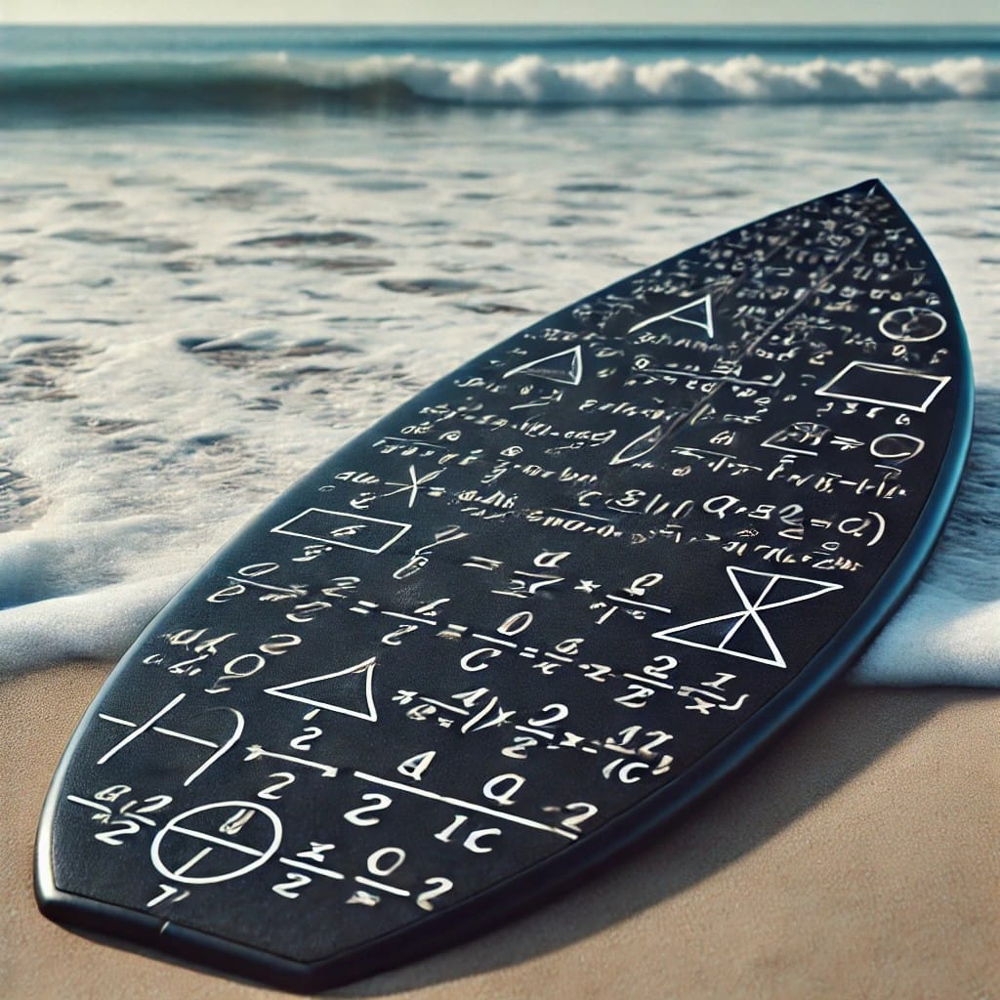

Cuanto sabes de Mates?

Inicia sesión o regístrate
Iniciar sesión
Divisibilidad y números enteros
Sistema de numeración decimal y sexagesimal
Las fracciones
Álgebra
Ecuaciones
Teorema de Pitágoras y semejanza
Cuerpos geométricos
Medida del volumen
Funciones
Estadística
Conceptos
Ver puntajes
Aciertos:
0
, Fallos:
0
Siguiente
Resultados
Volver al menú
Puntajes
Usuario
Último Puntaje
Mejor Puntaje
Volver al menú